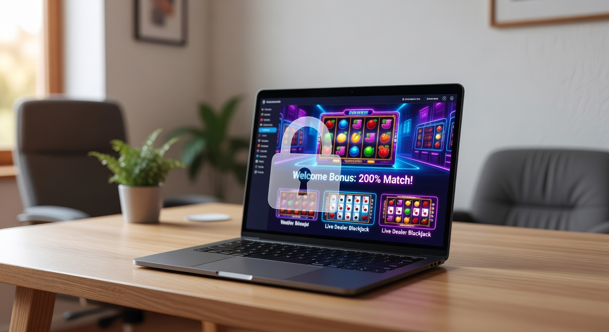
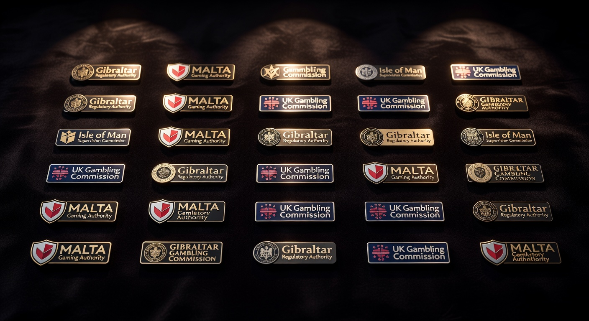
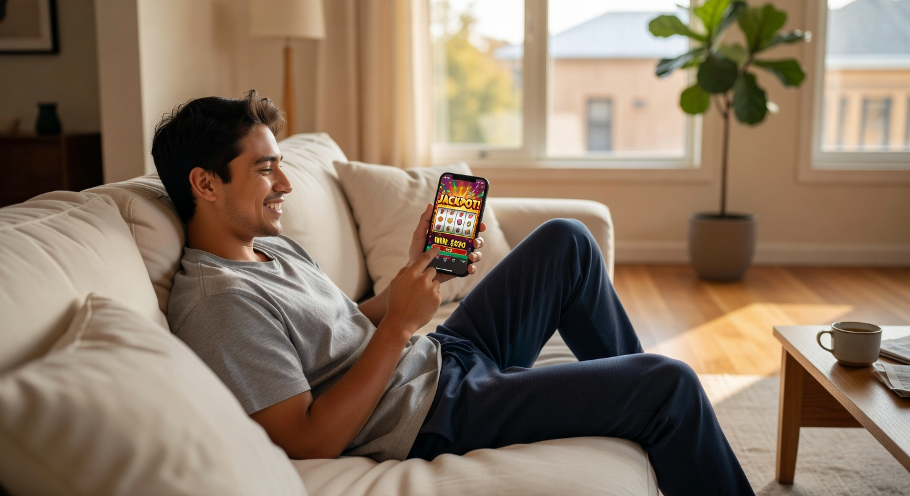
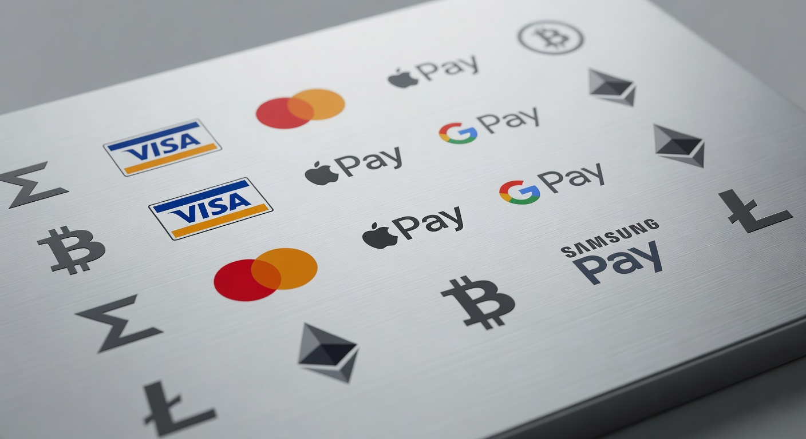

Betrouwbaar casino zonder Cruks: Veilig gokken buiten het Nederlandse systeem
De wereld van online kansspelen is in 2026 drastisch veranderd. Sinds de invoering van de Wet Kansspelen op afstand is de Nederlandse markt sterk gereguleerd door de Kansspelautoriteit (KSA). Hoewel dit voor veel spelers een veilige omgeving biedt, zoeken ervaren gokkers steeds vaker naar een betrouwbaar casino zonder Cruks. Dit Centraal Register Uitsluiting Kansspelen is namelijk niet voor iedereen de ideale oplossing, zeker niet wanneer men op zoek is naar meer vrijheid, hogere bonussen en een breder spelaanbod zonder de strikte beperkingen van de Nederlandse overheid.
Wanneer we spreken over een betrouwbaar casino zonder cruks, bedoelen we platformen die opereren onder internationale licenties. Deze aanbieders zijn niet aangesloten op de Nederlandse database, wat betekent dat spelers die per ongeluk in het register terecht zijn gekomen of simpelweg hun privacy willen behouden, hier terecht kunnen. In 2026 is de technologie achter deze sites zo geavanceerd dat de veiligheid vaak niet onderdoet voor die van Nederlandse aanbieders, mits je weet waar je op moet letten.
In dit uitgebreide artikel duiken we diep in de materie. We analyseren de beste opties voor 2026, leggen uit hoe de licenties in Malta, Curaçao en Kahnawake werken, en geven een eerlijk overzicht van de risico's en voordelen. Het vinden van een online casino zonder cruks dat ook echt veilig is, vereist namelijk een kritische blik op zaken als de RTP van spellen, de kwaliteit van de klantenservice en de snelheid van uitbetalingen.
Top 10 beste online casino’s zonder Cruks van 2026
De markt voor internationale goksites is in 2026 competitiever dan ooit. Voor Nederlandse spelers is het essentieel om alleen te spelen bij partijen die hun sporen verdiend hebben. Hieronder vind je een overzicht van de best presterende platforms van dit jaar, die allemaal bekend staan als een betrouwbaar casino zonder cruks.
| Casino | Licentie | Bonus | Kenmerk |
|---|---|---|---|
| WestAce | MGA / Kahnawake | 100% tot €500 | Snelste uitbetalingen |
| Holyluck | Curaçao (GCB) | 200% tot €1000 | Grootste spelaanbod |
| Golden Shield | Anjouan | 15% Cashback | Geen limieten |
| CryptoSpin | Costa Rica | 5 BTC Bonus | Anoniem gokken |
| Royal Reef | Malta | Gratis Spins | Top klantenservice |
1. Onze nummer één keuze voor veiligheid en snelheid
In 2026 steekt één aanbieder er met kop en schouders bovenuit als we kijken naar een betrouwbaar casino zonder cruks: WestAce. Dit platform heeft een hybride licentiestructuur waardoor het zowel veiligheid als enorme flexibiliteit biedt. Spelers die hier een account aanmaken, merken direct het verschil in snelheid bij de verificatie. Omdat er geen koppeling met iDIN of DigiD nodig is, kun je binnen enkele minuten beginnen met spelen.
WestAce staat in de industrie bekend om zijn transparante beleid. De algemene voorwaarden zijn duidelijk en de bonusvoorwaarden zijn eerlijk, met een realistische rondspeelvoorwaarde. Voor Nederlandse spelers die de beperkingen van de KSA beu zijn, biedt dit casino een verfrissende ervaring met duizenden slots en een indrukwekkend live casino gedeelte.
2. Hoogste bonussen voor Nederlandse high rollers
High rollers hebben het in het Nederlandse gereguleerde circuit vaak zwaar door de verplichte stortingslimieten en de beperkte bonussen. Bij een online casino zonder cruks zoals Holyluck is dat een heel ander verhaal. Hier worden spelers verwelkomd met bonussen die in de duizenden euro's kunnen lopen. In 2026 zien we dat Holyluck specifiek inspeelt op de behoeften van spelers die grotere bedragen willen inzetten zonder dat er direct een melding naar een overheidsinstantie gaat.
De VIP-programma's bij deze aanbieders zijn uitstekend opgezet. Je krijgt niet alleen een persoonlijke accountmanager, maar ook toegang tot exclusieve toernooien en hogere opnamelimieten. Dit maakt het een ideaal betrouwbaar casino zonder cruks voor iedereen die meer zoekt dan de standaard ervaring die bij lokale aanbieders zoals Casino 777 of ComeOn! te vinden is.
3. Beste spelaanbod zonder speellimieten
Een van de grootste irritaties bij Nederlandse legale casino's is de zogenaamde '2-seconden regel' en de beperkingen op de autoplay-functie. Een betrouwbaar casino zonder cruks in 2026 biedt spelers de originele ervaring van videoslots zoals de providers ze bedoeld hebben. Of je nu houdt van de hoge volatiliteit van Pragmatic Play of de innovatieve mechanieken van NetEnt, bij deze buitenlandse aanbieders geniet je van de volledige snelheid van het spel.
Bovendien is het aanbod vaak veel groter. Waar een Nederlands casino soms beperkt is tot enkele honderden spellen vanwege licentiekosten per titel, vind je bij een buitenlandse casino vaak meer dan 5.000 verschillende spellen. Dit varieert van klassieke fruitautomaten tot de modernste 'Instant Win Games' die in 2026 razend populair zijn geworden.
Wat is een casino zonder Cruks precies?

Een casino zonder Cruks is een online goksite die niet beschikt over een Nederlandse vergunning van de Kansspelautoriteit, maar wel legaal opereert onder een andere internationale jurisdictie. Omdat zij geen licentie van de KSA hebben, zijn zij wettelijk niet verplicht om de gegevens van hun spelers te toetsen aan het Centraal Register Uitsluiting Kansspelen. Dit betekent dat zij spelers kunnen accepteren die in Nederland een gokstop hebben of die simpelweg niet willen dat hun gokgedrag centraal geregistreerd wordt.
Het is een misverstand dat deze casino's per definitie onveilig zijn. Een betrouwbaar casino zonder cruks is vaak al jarenlang actief op de Europese of wereldwijde markt. Zij maken gebruik van geavanceerde encryptietechnologieën om de data van spelers te beschermen. In 2026 zien we dat de scheidslijn tussen kwaliteit en licentie vervaagt, aangezien veel internationale partijen hun standaarden naar een extreem hoog niveau hebben getild om te kunnen concurreren.
De werking van het Centraal Register Uitsluiting Kansspelen
Het Centraal Register Uitsluiting Kansspelen is door de Nederlandse overheid in het leven geroepen om gokverslaving tegen te gaan. Wanneer een speler zich inschrijft, wordt de toegang tot alle legale Nederlandse casino's voor minimaal zes maanden ontzegd. Hoewel dit een nobel streven is, werkt het systeem in de praktijk soms frustrerend. Spelers die een gokstop nemen in een opwelling, kunnen deze niet zomaar ongedaan maken. Hierdoor wijken zij uit naar een betrouwbaar casino zonder cruks om toch een gokje te kunnen wagen.
In 2026 is de koppeling met Cruks voor Nederlandse aanbieders verplicht bij elke login en registratie. Dit proces kost tijd en kan de spelervaring vertragen. Bij een online casino zonder cruks is dit proces volledig afwezig. Je vult je gegevens in, doet een storting en je kunt direct spelen. Voor veel spelers die waarde hechten aan efficiëntie is dit de belangrijkste reden om de grens over te kijken.
Waarom kiezen spelers voor een buitenlandse goksite?
De keuze voor een buitenlandse aanbieder is vaak een combinatie van factoren. Naast het vermijden van het register, spelen ook de ruimere bonusmogelijkheden een rol. Nederlandse regels verbieden bijvoorbeeld bonussen voor jongvolwassenen (18-24 jaar) en beperken de hoogte van promoties aanzienlijk. Een betrouwbaar casino zonder cruks heeft deze restricties niet, waardoor spelers meer waar voor hun geld krijgen in de vorm van stortingsbonussen en cashback.
Daarnaast is de privacy een groot goed. In een tijd waarin data steeds vaker gedeeld wordt, vinden veel Nederlanders het prettig dat hun gokactiviteiten niet direct inzichtelijk zijn voor nationale instanties. Bij een buitenlandse casino kun je vaak met crypto betalen, wat een extra laag van anonimiteit en veiligheid biedt die je bij TonyBet of andere lokale sites niet zult vinden.
Hoe herken je een echt betrouwbaar casino zonder Cruks?
Het identificeren van een betrouwbaar casino zonder cruks vereist wat onderzoekswerk. In 2026 zijn er helaas ook minder bonafide partijen actief die proberen mee te liften op de populariteit van de markt. De eerste stap is altijd het controleren van de licentie onderaan de homepage. Een legitiem casino zal altijd een klikbaar logo van de toezichthouder tonen, zoals de MGA of de Curaçao Gaming Control Board.
Een andere belangrijke indicator is de reputatie op onafhankelijke reviewplatforms. Lees wat andere spelers zeggen over de uitbetalingssnelheid en de kwaliteit van de ondersteuning. Een betrouwbaar casino zonder cruks zal zelden klachten hebben over onterecht ingehouden winsten. Ook de aanwezigheid van bekende softwareproviders zoals Play’n GO en Pragmatic Play is een goed teken, aangezien deze grote bedrijven hun spellen niet zomaar aan onbetrouwbare partijen uitlenen.
De rol van internationale kansspellicenties
Internationale licenties vormen de ruggengraat van de online gokindustrie buiten Nederland. Hoewel de KSA licentie in Nederland de norm is, genieten licenties uit Malta (MGA) wereldwijd een uitstekende reputatie. Wanneer je speelt bij een betrouwbaar casino zonder cruks met een MGA-vergunning, weet je dat er strikt toezicht is op eerlijk spel en financiële stabiliteit. Deze autoriteiten eisen dat het geld van spelers op aparte rekeningen wordt bewaard, gescheiden van het operationele budget van het bedrijf.
In 2026 zijn ook licenties uit Kahnawake en Anjouan steeds prominenter geworden. Deze jurisdicties hebben hun regelgeving gemoderniseerd om aan de huidige veiligheidsstandaarden te voldoen. Een online casino zonder cruks dat onder deze vlaggen vaart, moet voldoen aan strenge KYC (Know Your Customer) procedures, wat ironisch genoeg bijdraagt aan de algehele betrouwbaarheid van het platform.
Beveiliging en SSL-certificaten op de website
Veiligheid begint bij de technische infrastructuur van de website. Elk betrouwbaar casino zonder cruks moet in 2026 minimaal gebruikmaken van 256-bits SSL-encryptie. Dit zorgt ervoor dat jouw persoonlijke en financiële gegevens versleuteld worden verzonden, waardoor hackers geen kans krijgen om gevoelige informatie te onderscheppen. Je kunt dit eenvoudig controleren door naar het hangslotje in de adresbalk van je browser te kijken.
Daarnaast is twee-factor authenticatie (2FA) tegenwoordig de standaard bij de betere platforms. Dit biedt een extra beveiligingslaag bij het inloggen of het doen van een opname. Voor spelers die op zoek zijn naar een betrouwbaar casino zonder cruks, is de aanwezigheid van dergelijke beveiligingsfeatures een absolute vereiste om hun speelervaring zorgeloos te laten verlopen.
Eerlijkheid van spellen en RNG-certificering
Hoe weet je of een spel eerlijk verloopt? Dit wordt gegarandeerd door de Random Number Generator (RNG). Onafhankelijke testinstituten zoals eCOGRA of iTech Labs controleren regelmatig of de spellen bij een betrouwbaar casino zonder cruks wel echt willekeurig zijn. Deze certificaten zijn vaak te vinden in de footer van de website. Een casino dat transparant is over haar RTP-cijfers (Return to Player) laat zien dat zij niets te verbergen hebben.
In 2026 is het bij een online casino zonder cruks gebruikelijk dat de RTP's van spellen vaak hoger liggen dan bij de fysieke casino's van Holland Casino. Dit komt door de lagere overheadkosten van online platformen. Door te kiezen voor een betrouwbaar casino zonder cruks met gecertificeerde spellen, maximaliseer je jouw kansen op winst en weet je zeker dat het huisvoordeel niet op een oneerlijke manier is aangepast.
Belangrijkste licenties bij casino’s in het buitenland

Als je de overstap maakt naar het buitenland, kom je verschillende licentiegevers tegen. Elke licentie heeft zijn eigen sterke en zwakke punten qua spelerbescherming. In de zoektocht naar een betrouwbaar casino zonder cruks is kennis van deze instanties essentieel. De Wet Kansspelen op afstand geldt hier niet, dus je bent aangewezen op de bescherming die deze internationale lichamen bieden.
Hieronder bespreken we de meest voorkomende licenties die je in 2026 zult tegenkomen bij een casino dat niet onder het toezicht van de KSA valt. Het is belangrijk om te onthouden dat een licentie niet alleen een papiertje is, maar een set regels waaraan de aanbieder zich moet houden om zijn deuren open te mogen houden.
Malta Gaming Authority (MGA)
De MGA licentie wordt vaak beschouwd als de "gouden standaard" binnen Europa. Een betrouwbaar casino zonder cruks met een licentie uit Malta moet voldoen aan de strengste EU-normen. De MGA bemiddelt ook bij geschillen tussen de speler en het casino, wat een groot voordeel is voor Nederlandse spelers die een extra laag zekerheid willen. In 2026 kiezen veel grote merken voor deze licentie om hun betrouwbaarheid te onderstrepen.
Het voordeel van spelen bij een MGA-casino is dat zij vaak zeer strikt zijn op het gebied van verantwoord spelen, ondanks dat zij niet aan Cruks gekoppeld zijn. Zij bieden eigen uitsluitingsmogelijkheden en limieten aan. Voor veel spelers is een casino met deze licentie de beste tussenweg tussen de restricties van de KSA en de volledige vrijheid van minder streng gereguleerde markten.
Curaçao Gaming Control Board
Curaçao is al decennia een speler in de gokwereld, maar in 2026 is hun reputatie sterk verbeterd door de hervormingen van de Curaçao Gaming Control Board (GCB). Waar het vroeger een wildwest was met sub-licenties, is er nu veel meer direct toezicht. Een betrouwbaar casino zonder cruks uit Curaçao biedt vaak de meeste flexibiliteit als het gaat om betaalmethoden, waaronder de acceptatie van cryptovaluta.
Veel Nederlandse spelers geven de voorkeur aan Curaçaose casino's vanwege de enorme bonussen en het ontbreken van strenge inzetlimieten. Hoewel de spelerbescherming op papier minder strikt lijkt dan bij de MGA, bewijzen de grote namen in deze regio al jarenlang dat zij een veilige en betrouwbare omgeving kunnen bieden voor internationaal publiek.
Kahnawake Gaming Commission
Gevestigd in Canada, is de Kahnawake Gaming Commission een van de oudste en meest gerespecteerde toezichthouders ter wereld. Een betrouwbaar casino zonder cruks met deze licentie geniet veel aanzien vanwege de strenge controles op de eerlijkheid van de software. Zij werken vaak samen met andere licentiegevers om een waterdicht systeem van toezicht te creëren.
In 2026 zien we dat steeds meer casino's die zich op de Europese markt richten, een licentie in Kahnawake aanvragen. Dit doen zij om een alternatief te bieden voor de steeds strenger wordende Europese regels, terwijl zij toch een hoog niveau van integriteit behouden. Voor spelers die op zoek zijn naar stabiliteit, is een online casino zonder cruks uit deze regio een uitstekende keuze.
Anjouan Gaming License
De licentie uit Anjouan (Comoren) is in 2026 een opkomende kracht in de online gokmarkt. Hoewel minder bekend dan de MGA of Curaçao, biedt het een solide juridisch kader voor internationale aanbieders. Een betrouwbaar casino zonder cruks dat kiest voor Anjouan profiteert van snellere vergunningsprocedures, wat hen in staat stelt om sneller te innoveren en de nieuwste spellen aan te bieden aan hun klanten.
Voor de speler betekent een Anjouan-licentie vaak dat het casino lagere kosten heeft en daardoor hogere uitbetalingspercentages kan hanteren. Het blijft echter belangrijk om ook bij deze licentie de individuele reputatie van het casino te controleren. In 2026 zijn er verschillende top-tier aanbieders die onder deze vlag opereren en die inmiddels bewezen hebben zeer betrouwbaar te zijn.
Voordelen van spelen bij een aanbieder zonder Cruks-koppeling

Waarom zou je in 2026 kiezen voor een betrouwbaar casino zonder cruks in plaats van een Nederlandse aanbieder? De redenen zijn divers en vaak persoonlijk. Het belangrijkste aspect is de vrijheid. In Nederland bepaalt de overheid steeds vaker hoeveel je mag storten en hoe lang je mag spelen. Voor de recreatieve speler die controle heeft over zijn eigen budget, voelen deze regels vaak betuttelend aan.
Buiten de KSA-markt zijn deze beperkingen er niet. Je bent zelf verantwoordelijk voor je limieten. Bovendien is de algehele sfeer bij een online casino zonder cruks vaak internationaler en dynamischer. Je hebt toegang tot wereldwijde netwerk-jackpots die bij lokale aanbieders soms ontbreken. Ook de kwaliteit van het platform zelf is vaak superieur omdat deze sites gericht zijn op een wereldwijd publiek met hoge verwachtingen.
Geen restricties op bonussen en promoties
In Nederland zijn bonussen aan banden gelegd om kwetsbare groepen te beschermen. Bij een betrouwbaar casino zonder cruks vind je daarentegen een overvloed aan promoties. Dit begint met een welkomstbonus, maar stopt daar niet. Denk aan wekelijkse reloads, cashback bonussen en loyaliteitspunten die je kunt inwisselen voor echt geld of spins. In 2026 zijn de "Cashback Bonussen" bij buitenlandse casino's bijzonder populair omdat ze het risico voor de speler verkleinen.
Bovendien zijn de "Grotere Bonussen" bij deze aanbieders vaak niet gebonden aan de strenge Nederlandse regels voor jongvolwassenen. Iedereen boven de 18 jaar (of 21, afhankelijk van het casino) kan profiteren van de volle mep. Dit maakt het voor spelers aantrekkelijk om regelmatig van casino te wisselen of juist trouw te blijven aan een aanbieder met een uitstekend VIP-programma.
Hogere inzetlimieten en geen verplichte stortingslimieten
Bij een Nederlands casino moet je bij registratie aangeven hoeveel je maximaal wilt storten per dag, week of maand. Hoewel dit bedoeld is voor zelfbescherming, vinden veel ervaren gokkers dit een inbreuk op hun autonomie. Een betrouwbaar casino zonder cruks laat de speler vrij in deze keuze. Wil je een keer wat groter inzetten op de roulettetafel? Dan word je niet direct geblokkeerd door een systeem dat vindt dat je "genoeg" hebt uitgegeven.
De "Loyaliteitsbonussen" bij deze platforms belonen spelers die vaker en met hogere inzetten spelen. In 2026 is de markt voor high rollers vrijwel volledig verschoven naar het buitenland, simpelweg omdat de Nederlandse wetgeving te weinig ruimte laat voor dit segment. Een online casino zonder cruks begrijpt deze doelgroep en biedt de tools en limieten die zij nodig hebben voor een optimale ervaring.
Snellere registratieprocedures zonder DigiD
Niemand houdt van administratieve rompslomp. Het registreren bij een Nederlands casino kan soms een eeuwigheid duren vanwege de verplichte koppeling met DigiD of iDIN. Bij een betrouwbaar casino zonder cruks is dit proces gestroomlijnd. Je vult je basisgegevens in, verifieert je e-mailadres en je bent klaar om te gaan. In 2026 maken veel van deze sites gebruik van geautomatiseerde KYC-systemen die je documenten binnen enkele minuten keuren.
Dit gemak is een van de redenen waarom spelers die geen gokprobleem hebben, toch de voorkeur geven aan een buitenlandse casino. Het biedt een drempelloze instap. Bovendien hoef je je geen zorgen te maken dat je login-gegevens gekoppeld zijn aan je officiële overheidsidentiteit, wat voor velen een prettig idee is vanuit het oogpunt van privacy.
Populaire betaalmethoden voor Nederlandse spelers

Een cruciaal aspect van een betrouwbaar casino zonder cruks is de aanwezigheid van vertrouwde betaalmethoden. Hoewel iDEAL officieel gereserveerd is voor casino's met een KSA-licentie, zijn er in 2026 talloze alternatieven die net zo veilig en snel werken. Veel buitenlandse aanbieders maken gebruik van 'fintech' oplossingen die directe bankoverschrijvingen mogelijk maken vanuit Nederlandse rekeningen zonder dat de bank het direct als "gokken" labelt.
Hieronder bespreken we de meest gebruikte methoden die je zult tegenkomen bij een online casino zonder cruks. Het is altijd aan te raden om een methode te kiezen die je al kent, of om je te verdiepen in de voordelen van moderne opties zoals e-wallets en crypto, die in 2026 de standaard zijn geworden voor snelle uitbetalingen.
Gokken met iDEAL of directe bankoverschrijving
Hoewel het klassieke iDEAL-logo soms ontbreekt bij een betrouwbaar casino zonder cruks, kun je vaak toch direct storten via je eigen bank. Dit gaat via tussenpersonen zoals Volt of Trustly. Deze systemen werken op precies dezelfde manier: je logt in bij je eigen bankomgeving, bevestigt de betaling en het geld staat direct op je casino-account. Dit zorgt voor een vertrouwde ervaring, zelfs buiten de Nederlandse licentie-omgeving.
Voor veel spelers is dit de "go-to" methode omdat het veilig is en direct inzicht geeft in de uitgaven. Een betrouwbaar casino zonder cruks zal deze transacties ook snel verwerken wanneer je een winst wilt laten uitbetalen naar je bankrekening. In 2026 zijn deze 'Instant Banking' opties de norm geworden bij vrijwel elke top-tier buitenlandse goksite.
De opkomst van crypto-betalingen
In 2026 is crypto niet meer weg te denken uit de online casino wereld. Een betrouwbaar casino zonder cruks dat Bitcoin, Ethereum of USDT accepteert, biedt spelers ongekende voordelen. Betalingen zijn razendsnel, de transactiekosten zijn minimaal en de privacy is maximaal. Voor veel Nederlandse spelers is dit de ideale manier om te gokken zonder dat het direct opvalt op hun bankafschriften.
Bovendien bieden crypto-casino's vaak nog hogere bonussen. Omdat zij geen hoge kosten hebben aan tussenpersonen, kunnen zij die winst teruggeven aan de speler. Een online casino zonder cruks met een sterke focus op crypto is vaak technologisch vooruitstrevender en biedt spellen die "Provably Fair" zijn, wat een extra garantie is voor de eerlijkheid van het spel.
E-wallets zoals MiFinity en Jeton
E-wallets zijn al jaren populair, maar in 2026 zien we een verschuiving van Skrill en Neteller naar modernere opties zoals MiFinity en Jeton bij een betrouwbaar casino zonder cruks. Deze wallets zijn gebruiksvriendelijker, hebben lagere kosten en bieden vaak fysieke of virtuele betaalkaarten aan. Het grote voordeel is dat je een buffer creëert tussen je bankrekening en het casino.
Wanneer je winst maakt bij een online casino zonder cruks, wordt dit vaak binnen enkele uren op je e-wallet gestort. Vanuit daar kun je het geld weer uitgeven of terugstorten naar je bank. Het biedt een niveau van controle over je gokbudget dat veel spelers erg waarderen. Bovendien worden deze wallets door vrijwel alle grote internationale casino's geaccepteerd.
Spelaanbod bij een online casino zonder Cruks
Het hart van elk casino is natuurlijk het spelaanbod. Bij een betrouwbaar casino zonder cruks in 2026 word je overspoeld met duizenden opties. Waar Nederlandse sites soms wat behoudend zijn met het toevoegen van nieuwe titels, zie je bij de internationale toppers dagelijks nieuwe releases. Van de klassieke gokkasten tot complexe live gameshows: de variëteit is simpelweg groter.
Ook de kwaliteit van de spellen is gegarandeerd omdat zij samenwerken met de elite van de softwareontwikkeling. Namen als Pragmatic Play, Play’n GO en NetEnt zijn vaste gasten in de lobby van elk betrouwbaar casino zonder cruks. Dit betekent dat je toegang hebt tot bekende titels als Starburst, Book of Dead en de razend populaire "Drops & Wins" toernooien die wereldwijd voor miljoenen aan prijzen weggeven.
Live casino games van Evolution en Pragmatic Play
De live casino ervaring is in 2026 realistischer dan ooit. Wanneer je speelt bij een betrouwbaar casino zonder cruks, heb je vaak toegang tot de volledige suite van Evolution. Denk aan spectaculaire gameshows zoals Crazy Time en Lightning Roulette, maar ook aan talloze tafels voor Blackjack en Baccarat met professionele dealers. De streams zijn in 4K kwaliteit en bieden een meeslepende ervaring die je bijna doet vergeten dat je thuis op de bank zit.
Pragmatic Play Live is een andere geduchte concurrent die in elk online casino zonder cruks aanwezig is. Zij bieden vaak tafels met verschillende inzetlimieten, van enkele centen tot duizenden euro's per hand. Deze variëteit is cruciaal voor een betrouwbaar casino zonder cruks om zowel de recreatieve speler als de high roller tevreden te houden.
Videoslots zonder de 2-seconden regel
Een van de meest gewaardeerde punten bij een betrouwbaar casino zonder cruks is het ontbreken van de kunstmatige vertragingen tussen spins. In Nederland moet elke spin op een videoslot minimaal 2 seconden duren. Dit haalt voor veel spelers het tempo uit het spel. In het buitenland kun je gebruikmaken van de 'Turbo Spin' en 'Autoplay' functies zoals ze oorspronkelijk bedoeld zijn.
Dit maakt het spelen van moderne slots veel vloeiender. Of je nu op zoek bent naar een "10 euro casino zonder cruks" of een site waar je groter wilt inzetten, de ervaring is simpelweg plezieriger. Bovendien zijn de RTP-waarden bij een online casino zonder cruks vaak transparanter en soms zelfs hoger dan bij de Nederlandse concurrentie, wat op de lange termijn meer speeltijd oplevert.
Sportsbetting: Wedden op sport buiten de KSA
Veel goksites die functioneren als een betrouwbaar casino zonder cruks hebben ook een uitgebreide sportsbook sectie. Hier kun je wedden op alles van de Eredivisie tot de meest obscure competities in Azië of Amerika. De odds (noteringen) bij een buitenlandse aanbieder zijn vaak scherper dan bij Nederlandse bookmakers omdat zij minder belasting hoeven af te dragen over de inzet.
Bovendien bieden zij vaker "Live Betting" opties met uitgebreide statistieken en soms zelfs live streams van de wedstrijden. Voor de sportfanaat is een online casino zonder cruks met een goed sportsbook een totaaloplossing. Je kunt met één account zowel aan de roulettetafel zitten als een weddenschap plaatsen op je favoriete voetbalclub, allemaal zonder de restricties van het Nederlandse systeem.
Betaalmethoden casino zonder Cruks: Een overzicht
In 2026 is de variëteit aan betaalopties een van de sterkste punten van een betrouwbaar casino zonder cruks. Het is niet alleen belangrijk dat je kunt storten, maar vooral dat je winsten veilig en snel worden uitbetaald. De meeste internationale casino's hebben hun financiële afdelingen geoptimaliseerd om binnen 24 uur verzoeken te verwerken. Dit is essentieel voor het behouden van een goede reputatie in de competitieve online gokmarkt.
Voor Nederlandse spelers die gewend zijn aan iDEAL, is het goed om te weten dat er veel vergelijkbare methoden zijn. Hieronder volgt een kort overzicht van de meest betrouwbare keuzes voor 2026:
- Volt/Trustly: Directe bankoverboekingen die werken zoals iDEAL.
- MiFinity: Een moderne e-wallet die zeer populair is bij een betrouwbaar casino zonder cruks.
- Crypto (BTC, ETH, USDT): De snelste en meest anonieme manier van betalen.
- Creditcards (Visa/Mastercard): Wereldwijd geaccepteerd, al zijn uitbetalingen soms wat trager.
- Jeton: Een opkomende wallet met uitstekende mobiele integratie.
Mobiel gokken zonder Cruks: Spelen waar je maar wilt
In 2026 gebeurt meer dan 80% van het online gokken via de smartphone. Een betrouwbaar casino zonder cruks heeft daarom altijd een website die volledig geoptimaliseerd is voor mobiel gebruik. Je hoeft meestal geen app te downloaden; de site past zich automatisch aan je scherm aan via HTML5-technologie. Dit betekent dat alle spellen, van live casino tot complexe slots, soepel draaien op zowel iOS als Android toestellen.
De mobiele ervaring bij een online casino zonder cruks is vaak superieur aan die van Nederlandse apps, die soms beperkt worden door de regels van de App Store of Play Store. Je hebt direct toegang tot je account, kunt stortingen doen met mobiele betaalapps en contact opnemen met de helpdesk via een live chat die op je mobiel net zo goed werkt als op je desktop. Dit maakt een betrouwbaar casino zonder cruks de perfecte metgezel voor onderweg.
Stappenplan: Hoe begin je met spelen?
Wil je starten bij een betrouwbaar casino zonder cruks? Het proces is simpel, maar het is belangrijk om het zorgvuldig te doen om je eigen veiligheid te waarborgen. Volg deze stappen om in 2026 direct en veilig aan de slag te gaan:
- Selecteer een casino: Kies een van de aanbieders uit onze top 10 die het beste bij jouw voorkeuren past.
- Maak een account aan: Klik op de registratieknop en vul je gegevens in. Bij een online casino zonder cruks duurt dit meestal minder dan twee minuten.
- Kies je welkomstbonus: Vergeet niet om de bonus aan te vinken tijdens de registratie of je eerste storting. Lees wel even de voorwaarden.
- Doe een storting: Gebruik een van de veilige betaalmethoden zoals Volt, MiFinity of Crypto. Let op de minimale storting (vaak is er een 10 euro deposit casino zonder cruks optie).
- Start met spelen: Je saldo wordt direct bijgewerkt. Kies je favoriete spel en geniet van de ervaring in een betrouwbaar casino zonder cruks.
Verantwoord spelen bij casino’s zonder register
Hoewel we praten over een betrouwbaar casino zonder cruks, blijft verantwoord spelen de belangrijkste prioriteit. Het ontbreken van de Nederlandse overheidscontrole betekent dat de verantwoordelijkheid nog meer bij de speler zelf ligt. Een kwalitatief casino zal echter altijd tools aanbieden om je te helpen je gokgedrag in de hand te houden. Denk aan stortingslimieten, sessietimers en verlieslimieten die je zelf kunt instellen in je accountinstellingen.
In 2026 zijn de beste internationale casino's proactief. Zij maken gebruik van AI-algoritmen die riskant speelgedrag herkennen en de speler hierop attenderen. Een echt betrouwbaar casino zonder cruks wil namelijk spelers die op de lange termijn plezier hebben, niet spelers die in de problemen komen. Het is altijd verstandig om je eigen grenzen te kennen en deze strikt te handhaven, ongeacht waar je speelt.
Zelfuitsluiting tools op de website
Mocht je merken dat het gokken geen spelletje meer is, dan biedt een betrouwbaar casino zonder cruks altijd de optie tot zelfuitsluiting. Dit kan variëren van een "afkoelperiode" van 24 uur tot een permanente sluiting van je account. In tegenstelling tot Cruks, geldt deze uitsluiting alleen voor de specifieke website of de groep van casino's waartoe zij behoren. Het is dus een persoonlijke beslissing om een gokstop te nemen.
Het proces van zelfuitsluiting bij een online casino zonder cruks is vaak heel simpel: één mailtje naar de klantenservice of een klik in je profiel is voldoende. Een betrouwbare aanbieder zal dit verzoek direct honoreren en je ook geen marketingmails meer sturen. Dit is een cruciaal onderdeel van de integriteit van een modern internationaal casino in 2026.
Externe hulpinstanties voor gokverslaving
Naast de tools op de website zelf, verwijst elk betrouwbaar casino zonder cruks naar externe instanties. Voor Nederlandse spelers zijn organisaties als AGOG of het Loket Kansspelen bekend, maar internationaal zijn er ook krachtige hulpmiddelen zoals BeGambleAware of Gamblers Anonymous. Deze instanties bieden professionele hulp en advies aan iedereen die het gevoel heeft de controle te verliezen.
Het is belangrijk om te weten dat je er niet alleen voor staat. Ook al speel je bij een online casino zonder cruks, de industrie als geheel neemt de problematiek serieus. In 2026 is de samenwerking tussen casino's en hulpverleners nauwer dan ooit, met als doel een veilige omgeving te creëren voor elke liefhebber van kansspelen.
Vergelijking: KSA-casino’s vs. Buitenlandse aanbieders
Om een weloverwogen keuze te maken, is het goed om de verschillen tussen Nederlandse legale casino's en een betrouwbaar casino zonder cruks naast elkaar te zetten. De Nederlandse markt, met namen als TonyBet en ComeOn!, is uiterst veilig maar soms erg rigide. De buitenlandse markt biedt meer variatie maar vereist een kritischer houding van de speler.
In 2026 zien we dat de scheiding tussen deze twee werelden duidelijker is geworden. De Nederlandse Wet Kansspelen op afstand is verder aangescherpt, terwijl de internationale markt zich heeft geprofileerd als het platform voor de "vrije" speler. Hieronder een beknopt overzicht van de belangrijkste verschillen:
| Kenmerk | KSA Casino (NL) | Casino zonder Cruks |
|---|---|---|
| Cruks-registratie | Verplicht | Niet van toepassing |
| Bonussen | Gelimiteerd / Leeftijdsgebonden | Zeer hoog / Geen restricties |
| Speeltempo | 2 seconden regel | Geen vertraging |
| Betaalmethoden | iDEAL / Creditcard | Crypto / E-wallets / Bank |
| Privacy | Gekoppeld aan BSN / DigiD | Hoge mate van anonimiteit |
Kan je van Cruks af?
Een veelgestelde vraag in 2026 is of je een Cruks-registratie voortijdig kunt beëindigen. Het korte antwoord is: nee. Als je eenmaal in het register staat, is dat voor de gekozen periode (minimaal 6 maanden) onherroepelijk. De overheid hanteert hierbij een nultolerantiebeleid. Dit is precies de reden waarom veel mensen op zoek gaan naar een betrouwbaar casino zonder cruks. Het biedt hen de mogelijkheid om zelf te bepalen wanneer zij weer klaar zijn om te spelen.
Het is echter essentieel om eerlijk naar jezelf te zijn. Als je in Cruks staat omdat je een serieus probleem hebt, is het zoeken naar een online casino zonder cruks misschien niet de juiste weg. Maar als de registratie een fout was of je situatie is veranderd, dan zijn deze internationale platforms een legitiem alternatief om toch van je hobby te genieten zonder de bureaucratische blokkades van de Nederlandse staat.
Een gokstop nemen op eigen voorwaarden
Buiten het officiële register om kun je ook bij een betrouwbaar casino zonder cruks een gokstop nemen. In 2026 bieden de meeste kwalitatieve sites de mogelijkheid om jezelf voor een bepaalde tijd te blokkeren voor één specifieke site. Dit noemen we "zelfuitsluiting". Het grote verschil is dat dit niet direct overal in Nederland bekend is. Je behoudt de regie over je eigen acties.
Voor veel spelers werkt dit systeem beter omdat het minder stigmatiserend voelt. Je erkent dat je even een pauze nodig hebt, stelt dit in bij je favoriete online casino zonder cruks, en na de periode kun je weer gewoon inloggen. Het is een volwassen manier van omgaan met kansspelen die goed past bij de filosofie van internationale aanbieders.
Cashback Bonussen: Waarom ze populair zijn in 2026
Een opvallende trend bij elk betrouwbaar casino zonder cruks in 2026 is de focus op cashback. In plaats van een eenmalige bonus bij je storting, krijg je een percentage van je verliezen terug. Dit is vaak een "no-wager" bonus, wat betekent dat je het geld direct kunt laten uitbetalen of opnieuw kunt inzetten zonder ingewikkelde voorwaarden. Het geeft een gevoel van een tweede kans en is veel transparanter dan de traditionele stortingsbonussen.
Veel spelers die de overstap maken naar een online casino zonder cruks, doen dit specifiek voor deze regelingen. Het zorgt voor een stabielere bankroll en beloont loyaliteit op een directe manier. In een markt waar alles om cijfers draait, is een betrouwbaar casino zonder cruks dat wekelijks 10% of 15% cashback biedt, goud waard voor de regelmatige bezoeker.
Grotere Bonussen voor nieuwe en bestaande spelers
De concurrentie tussen internationale casino's zorgt ervoor dat de bonussen in 2026 ongekende hoogtes hebben bereikt. Waar je in Nederland blij mag zijn met honderd euro, zie je bij een betrouwbaar casino zonder cruks vaak pakketten die oplopen tot €2.000 of meer, verdeeld over meerdere stortingen. Ook de "Gratis Spins" vliegen je om de oren, vaak op de meest populaire slots van het moment.
Het is wel cruciaal om altijd de 'wagering requirements' (rondspeelvoorwaarden) te controleren. Een betrouwbaar casino zonder cruks zal deze eerlijk en haalbaar houden, bijvoorbeeld 30x of 35x de bonus. Pas op voor sites die 60x of meer vragen; dit maakt het bijna onmogelijk om winst over te houden. In 2026 zijn de topspelers in de markt echter zeer fair geworden om hun klanten niet te verliezen aan de enorme concurrentie.
Loyaliteitsbonussen en VIP-programma's
Ben je een trouwe speler? Dan word je bij een betrouwbaar casino zonder cruks in 2026 koninklijk behandeld. De loyaliteitssystemen zijn vaak gamified: je stijgt in levels, opent schatkisten en verdient punten terwijl je speelt. Hoe hoger je komt, hoe beter de extra's. Denk aan snellere uitbetalingen, lagere rondspeelvoorwaarden en zelfs fysieke prijzen zoals de nieuwste gadgets of luxe reizen.
Voor de echte high rollers zijn er de exclusieve VIP-clubs. Een online casino zonder cruks biedt hiermee een niveau van service dat in Nederland door de strikte regelgeving vrijwel onmogelijk is geworden. Je hebt een direct lijntje met je accountmanager via WhatsApp of Telegram, waardoor elk probleem of verzoek binnen enkele minuten wordt afgehandeld. Dit persoonlijke aspect maakt een betrouwbaar casino zonder cruks voor velen de voorkeurskeuze.
Curaçao Gaming Authority: De nieuwe standaard?
Zoals eerder aangestipt, heeft de Curaçao Gaming Authority (nu GCB) in 2026 een enorme transformatie ondergaan. Door het invoeren van de LOK (Landsverordening op de Kansspelen) is het toezicht vele malen strenger geworden. Een betrouwbaar casino zonder cruks met een licentie uit Curaçao is tegenwoordig bijna net zo betrouwbaar als een MGA-casino. Dit heeft de deuren geopend voor veel nieuwe, innovatieve platforms die veiligheid combineren met de modernste technologieën.
Voor Nederlandse spelers betekent dit meer keuze uit kwalitatieve sites. De tijd dat een Curaçaose licentie een rode vlag was, ligt definitief achter ons. In 2026 is het juist een teken van een aanbieder die openstaat voor innovaties zoals crypto en directe bankkoppelingen, terwijl ze wel voldoen aan internationale standaarden voor KYC en anti-witwassen. Dit maakt het vinden van een online casino zonder cruks dat veilig is, een stuk eenvoudiger.
Instant Win Games: Snelheid boven alles
Naast de traditionele slots zijn "Instant Win Games" zoals Crash, Plinko en Mines in 2026 razend populair bij elk betrouwbaar casino zonder cruks. Deze spellen bieden directe resultaten en vaak een zeer hoog uitbetalingspercentage. Omdat ze simpel zijn van opzet, werken ze perfect op mobiele apparaten. Veel van deze spellen maken gebruik van blockchain-technologie om aan te tonen dat elke uitkomst 100% eerlijk en onvervalst is.
Een online casino zonder cruks dat deze spellen aanbiedt, trekt een jonger en technologisch onderlegd publiek aan. Het is een frisse wind in een industrie die soms lang kan blijven hangen in de klassieke fruitautomaten. De combinatie van snelheid, transparantie en hoge winpotentie maakt deze games een essentieel onderdeel van het aanbod van elk betrouwbaar casino zonder cruks in dit jaar.
Start met Spelen: Tips voor de eerste keer
Ga je voor het eerst spelen bij een betrouwbaar casino zonder cruks? Begin dan rustig aan. Kies voor een "5 euro deposit casino zonder cruks" of een "10 euro casino zonder cruks" om het platform eerst te testen. Zo kun je de snelheid van de website ervaren, zien hoe de spellen laden en testen hoe snel de klantenservice reageert op een simpele vraag.
Een andere tip is om eerst zonder bonus te spelen als je de regels van het casino wilt leren kennen. Zonder bonus ben je namelijk niet gebonden aan maximale inzetten per spin en kun je je winsten op elk gewenst moment opnemen. Zodra je je comfortabel voelt bij het online casino zonder cruks, kun je bij een volgende storting alsnog gebruikmaken van de promoties die zij aanbieden.
Voordelen van gokken zonder Cruks: De samenvatting
Samenvattend biedt een betrouwbaar casino zonder cruks in 2026 een ervaring die op veel vlakken rijker is dan de binnenlandse opties. De belangrijkste voordelen zijn de grotere bonussen, het ontbreken van de 2-seconden regel, de enorme variëteit aan spellen en de superieure privacy. Voor de speler die weet wat hij doet en controle heeft over zijn budget, is het een paradijs aan mogelijkheden.
Daarnaast is de technologische voorsprong van een online casino zonder cruks vaak merkbaar in de snelheid van de site en de efficiëntie van de betaalmethoden. Je wordt behandeld als een gewaardeerde klant in plaats van een potentieel risico, wat de algemene sfeer van het spelen ten goede komt. In 2026 is het dan ook niet vreemd dat een groot deel van de Nederlandse gokcommunity de weg naar deze betrouwbare internationale aanbieders heeft gevonden.
Trends in de gokmarkt voor 2026
De gokmarkt in 2026 staat niet stil. We zien een enorme opkomst van Virtual Reality (VR) casino's, waar je met een headset echt door een virtuele casinovloer kunt lopen. Een betrouwbaar casino zonder cruks loopt vaak voorop in deze ontwikkelingen. Ook kunstmatige intelligentie wordt steeds vaker ingezet om de speelervaring te personaliseren, bijvoorbeeld door spellen aan te bevelen die precies passen bij jouw speelstijl.
Een andere trend is de integratie van sociale elementen. Je kunt in een online casino zonder cruks steeds vaker chatten met andere spelers, deelnemen aan gezamenlijke jackpots of je resultaten delen op sociale platformen. Het gokken wordt hiermee een stuk socialer en minder een eenzame bezigheid. Deze innovaties zorgen ervoor dat een betrouwbaar casino zonder cruks ook in de toekomst aantrekkelijk blijft voor een breed publiek.
WestAce: Snel uitbetalende casino zonder Cruks 2026
We hebben het al even genoemd, maar WestAce verdient een speciale vermelding als het gaat om uitbetalingssnelheid. In 2026 is er niets vervelender dan dagenlang moeten wachten op je geld. Bij dit betrouwbaar casino zonder cruks worden opnames via e-wallets en crypto vrijwel direct goedgekeurd. Zelfs bankoverschrijvingen staan vaak nog dezelfde dag op je rekening dankzij de nieuwste SEPA Instant technieken.
Deze focus op snelheid is een teken van een financieel gezonde organisatie die vertrouwen heeft in haar eigen processen. Voor spelers is dit vaak de doorslaggevende factor om voor een specifiek online casino zonder cruks te kiezen. WestAce heeft hiermee een nieuwe standaard gezet waar andere aanbieders in 2026 hard hun best voor moeten doen om die te evenaren.
Holyluck: Innovatie en spelaanbod
Holyluck is een ander voorbeeld van hoe een betrouwbaar casino zonder cruks in 2026 de markt domineert. Zij onderscheiden zich door hun enorme aanbod aan exclusieve spellen die je nergens anders vindt. Door samen te werken met kleine, innovatieve studio's bieden zij unieke mechanieken en thema's aan die de traditionele gokwereld op zijn kop zetten.
Hun platform is bovendien uiterst gebruiksvriendelijk en snel, zelfs bij het laden van grafisch zware live casino games. Als je op zoek bent naar een online casino zonder cruks dat elke week iets nieuws te bieden heeft, dan is Holyluck de plek waar je moet zijn. Hun loyaliteitsprogramma is bovendien een van de meest gulle in de industrie, wat het een uitstekende keuze maakt voor de lange termijn.
Contactgegevens en Klantenservice
Een vaak onderschat aspect van een betrouwbaar casino zonder cruks is de bereikbaarheid van de klantenservice. In 2026 verwachten spelers 24/7 ondersteuning via verschillende kanalen. De topcasino's bieden een live chat aan waarbij je binnen dertig seconden een medewerker aan de lijn hebt. Vaak zijn er zelfs Nederlandstalige medewerkers beschikbaar, wat de communicatie een stuk makkelijker maakt.
Daarnaast is een uitgebreide FAQ-sectie een teken van een goed georganiseerd online casino zonder cruks. Hier kun je antwoorden vinden op de meest voorkomende vragen over bonussen, stortingen en technische zaken. Transparantie in contactgegevens, zoals een fysiek adres en een e-mailadres voor klachten, draagt bij aan het imago van een betrouwbaar casino zonder cruks en geeft de speler de zekerheid dat er altijd iemand klaarstaat om te helpen.
Conclusie over veilig gokken buiten Cruks
Het jaar 2026 heeft ons laten zien dat een betrouwbaar casino zonder cruks een uitstekend en veilig alternatief kan zijn voor het Nederlandse aanbod onder de Wet Kansspelen op afstand. Of het nu gaat om de hogere bonussen, de vrijheid van inzet of de modernere betaalmethoden, de voordelen zijn voor de ervaren speler evident. Door te kiezen voor platformen met gerenommeerde licenties uit Malta, Curaçao of Kahnawake, geniet je van een hoogwaardige spelervaring zonder onnodige beperkingen.
Het blijft echter cruciaal om altijd je eigen verantwoordelijkheid te nemen. Gebruik de tools die deze casino's aanbieden om je grenzen te bewaken en speel alleen met geld dat je kunt missen. Een online casino zonder cruks biedt je de vrijheid, maar jij bent degene die aan het stuur zit. Met de juiste voorbereiding en kennis, zoals we die in dit artikel hebben gedeeld, staat niets een spannende en veilige gokervaring in de weg.
Veelgestelde vragen (FAQ)
Is een casino zonder Cruks legaal in Nederland?
In 2026 mogen deze casino's officieel geen reclame maken in Nederland zonder KSA-licentie. Echter, als speler is het niet verboden om een account aan te maken bij een betrouwbaar casino zonder cruks dat over een geldige internationale licentie beschikt. De verantwoordelijkheid voor het afdragen van kansspelbelasting ligt in sommige gevallen bij de speler zelf.
Zijn mijn gegevens veilig bij een buitenlandse casino?
Ja, mits je kiest voor een betrouwbaar casino zonder cruks. Deze maken gebruik van dezelfde hoogwaardige SSL-encryptie als banken en Nederlandse aanbieders. Omdat zij aan internationale privacywetgeving (zoals de GDPR binnen de EU voor MGA-casino's) moeten voldoen, wordt er zorgvuldig met je data omgegaan.
Kan ik met iDEAL betalen bij een online casino zonder cruks?
Hoewel het officiële iDEAL-merk vaak niet aanwezig is, bieden veel van deze casino's in 2026 'Instant Bank Transfer' opties aan via providers zoals Volt of Trustly. Dit werkt exact hetzelfde en is gekoppeld aan alle grote Nederlandse banken, waardoor je veilig en direct kunt storten bij een betrouwbaar casino zonder cruks.
Wat is het voordeel van een 5 euro deposit casino zonder cruks?
Een "5 euro deposit casino zonder cruks" is ideaal voor spelers die met een klein budget willen spelen of een nieuwe site willen uitproberen zonder groot financieel risico. Het stelt je in staat om de betrouwbaarheid van het platform te testen voordat je grotere bedragen stort.
Hoe snel krijg ik mijn winst uitbetaald?
Bij een betrouwbaar casino zonder cruks in 2026 is de verwerkingstijd vaak korter dan 24 uur. Als je gebruikmaakt van crypto of e-wallets, staat het geld vaak al binnen een paar uur op je rekening. Bankoverschrijvingen duren meestal één werkdag.

Digitale marketeer en contentspecialist met ruim 7 jaar ervaring.